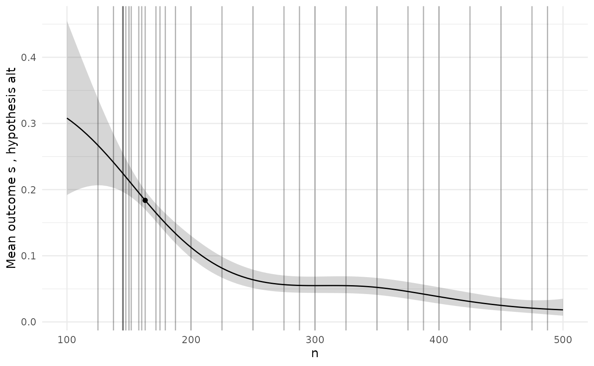

BOSSS
BOSSS.RmdEvery application of BOSSS follows the same set of steps:
- Formally specify the problem and create a corresponding
BOSSS_problemobject; - Create a
BOSSS_solutionobject and initialise it; - Perform a number of iterations, each one updating and (hopefully)
improving the
BOSSS_solutionobject; - Select a final design and run some diagnostics to check it is valid.
We will work through these steps here for an example problem: designing a cluster randomised trial. For more illustrations, see the “Examples” article.
Problem
The first ingredient of a BOSSS problem is the simulation function.
The arguments of this function must first specify the design
variables which we want to vary in our problem, followed by the
model parameters. In this example we have two design variables
representing the number of clusters in each arm, and the number of
participants in each arm. The model parameters are the mean difference
in outcome between the control and experimental arms
(beta_1), the within-cluster standard deviation
(sig_w), and the between-cluster standard deviation
(sig_b). Note that all of these inputs require some
defaults to be provided.
The other element of interface the simulation function must conform
to is in its return value, which should be a named vector of the
quantities who’s mean values we want to estimate using the Monte Carlo
method. Here, we have one such quantity: a boolean indicator of a
negative decision, s.
sim_cRCT <- function(k = 10, n = 200, beta_1 = 0.3, sig_w = 0.975, sig_b = 0.224){
k <- floor(k); n <- floor(n)
u_c <- rnorm(k, sd = sig_b)
cluster_size <- rep(n%/%k, k) + c(rep(1, n%%k), rep(0, k - n%%k))
y_c <- rep(u_c, times = cluster_size) + rnorm(n, 0, sig_w)
u_i <- rnorm(k, sd = sig_b)
y_i <- beta_1 + rep(u_i, times = cluster_size) + rnorm(n, 0, sig_w)
s <- t.test(y_i, y_c, alternative = "greater")$p.value > 0.05
return(c(s = s))
}
# For example,
sim_cRCT()
#> s
#> FALSEIn our problem we are not just interested in the expected value of
s; we also want to minimise the number of clusters and the
number of participants, and to put an upper limit on the number of
participants per cluster. Since these are fixed quantities given any
design, we evaluate them in a separate deterministic function. This
should conform to the same principles as the simulation function, with
the same inputs, but allowing for different named outputs. Here, the
outputs are just k, n, and
m = n/k:
det_cRCT <- function(k = 10, n = 200, beta_1 = 0.3, sig_w = 0.975, sig_b = 0.224){
return(c(k = k, n = n, m = n/k))
}Next, we need to note the ranges of the design variables which we
plan to search over. We use the design_space() function for
this, specifying the lower and upper limits of the design variables in
the order they appear as simulation function arguments:
design_space <- design_space(lower = c(10, 100),
upper = c(100, 500),
sim = sim_cRCT)
design_space
#> name lower upper
#> 1 k 10 100
#> 2 n 100 500Note that the function automatically retrieves the names of the design variables based on the order they take in the simulation function.
We also need to specify the hypotheses which we’re planning to
simulate under, using the hypotheses() function, again
specifying in the order that parameters appear as simulation function
argument. We only need one hypothesis here, the alternative, since we
will be estimating the type II error rate.
hypotheses <- hypotheses(values = matrix(c(0.3, sqrt(0.95), sqrt(0.05)), ncol = 1),
hyp_names = c("alt"),
sim = sim_cRCT)
hypotheses
#> alt
#> beta_1 0.3000000
#> sig_w 0.9746794
#> sig_b 0.2236068Constraints should be specified using the constraints
function. Each constraint should be named, and should be defined with
respect to a specific output and a specific hypothesis. It should have a
nominal maximum value, and a probability delta used to
judge if it is satisfied. Here, our fist constraint is that the mean of
the simulation output (i.e. the probability of a negative result) under
the alt hypothesis should be less than or equal to 0.2 with
a probability of at least 0.95. The second constraint is that the
cluster size m under the alt hypothesis must
be less than or equal to 10 - note that we provide a value for
delta, but this isn’t used since the constraint is
deterministic. Finally, we note whether the constraint output is binary
or otherwise.
constraints <- constraints(name = c("con_tII", "con_m"),
out = c("s", "m"),
hyp = c("alt", "alt"),
nom = c(0.2, 10),
delta = c(0.95, 1),
binary = c(TRUE, FALSE))
constraints
#> name out hyp nom delta binary
#> 1 con_tII s alt 0.2 0.95 TRUE
#> 2 con_m m alt 10.0 1.00 FALSEThe final ingredient of the problem is the set of objectives we want
to minimise. Similar to constraints, objectives are tied to a specific
output and hypothesis. We also specify weights for each objective which
help guide the internal optimisation process, and note whether or not
the output for each objective is binary or continuous. For example, here
we want to minimise both the number of patients n and the
number of clusters k, with the latter carrying a weight of
100 times that of the former.
objectives <- objectives(name = c("n", "k"),
out = c("n", "k"),
hyp = c("alt", "alt"),
weight = c(1, 10),
binary = c(FALSE, FALSE))
objectives
#> name out hyp weight binary
#> 1 n n alt 1 FALSE
#> 2 k k alt 10 FALSEWe now put this simulation function and set of data frames together
to create an object of class BOSSS_problem.
prob <- BOSSS_problem(sim_cRCT, design_space, hypotheses, objectives, constraints, det_func = det_cRCT)Initialisation
Having set up the problem, we now need to create an initial solution
to it. This involves setting up a space-filling set of designs spanning
the design space (where size is the number of designs),
computing the Monte Carlo estimates of all the expectations we are
interested in at each of these designs (using N samples for
each evaluation), fitting Gaussian Process models to these estimates,
and then using those models to estimate the Pareto set and front:
size <- 20
N <- 500
sol <- BOSSS_solution(size, N, prob)
#> Checking simulation speed...
#> Initialisation will take approximately 2.720101 secs
#> Solution found
print(sol)
#> Design variables for the Pareto set:
#>
#> k n
#> 6 66.250 150
#> 8 26.875 225
#> 12 38.125 175
#>
#> Corresponding objective function values...
#>
#> n, alt (mean) k, alt (mean)
#> 6 150 66.250
#> 8 225 26.875
#> 12 175 38.125
#>
#> ...and constraint function values:
#>
#> s, alt (mean) s, alt (var) m, alt (mean)
#> 6 -1.732408 0.01564970 2.264151
#> 8 -2.644208 0.03226089 8.372093
#> 12 -1.863526 0.01718935 4.590164
plot(sol)
The print() function will give a table of the Pareto set
with associated objective function values. The plot()
function will plot the Pareto front.
Iteration
We can now start improving this solution by calling the
iterate() function. Each call uses the fitted Gaussian
Process models to decide on the next design to be evaluated, computes
the Monte Carlo estimates at that point, and then updates the estimated
Pareto set and front.
N <- 500
for(i in 1:10) {
sol <- iterate(sol, prob, N)
}
print(sol)
#> Design variables for the Pareto set:
#>
#> k n
#> 6 66.25000 150.0000
#> 24 35.39951 157.9180
#> 26 17.17720 171.7621
#> 28 23.37763 163.0784
#>
#> Corresponding objective function values...
#>
#> n, alt (mean) k, alt (mean)
#> 6 150.0000 66.25000
#> 24 157.9180 35.39951
#> 26 171.7621 17.17720
#> 28 163.0784 23.37763
#>
#> ...and constraint function values:
#>
#> s, alt (mean) s, alt (var) m, alt (mean)
#> 6 -1.732408 0.01564970 2.264151
#> 24 -1.555727 0.01388802 4.461022
#> 26 -1.671131 0.01500043 9.999422
#> 28 -1.501149 0.01340870 6.975829
plot(sol)
Diagnostics
To check the GP models are giving sensible predictions, we can choose a specific design and then plot the predictions for each model along the range of each design variable.
# Pick a specific design from the Pareto set
design <- sol$p_set[nrow(sol$p_set),]
diag_plots(design, prob, sol)
#> [[1]]
#>
#> [[2]]
We can also get the predicted values and 95% credible intervals for
each point we have evaluated, contrasting these with the empirical MC
estimate and interval. This will return a data frame for each of the
models, named according to the output-hypothesis combination which
defines it. We highlight with a * any points where the two
intervals do not overlap.
diag_predictions(prob, sol)
#> $`Output: s, hypothesis: alt`
#> k n MC_mean MC_l95 MC_u95 p_mean p_l95
#> 1 55.00000 300.0000 0.032374101 0.028678214 0.03652838 0.033091347 0.025642104
#> 2 77.50000 200.0000 0.120303757 0.116441676 0.12427592 0.092546471 0.078025395
#> 3 32.50000 400.0000 0.030375699 0.026694246 0.03454685 0.029961720 0.021969747
#> 4 43.75000 250.0000 0.046362910 0.042599804 0.05044092 0.050532474 0.040785724
#> 5 88.75000 450.0000 0.004396483 0.001801431 0.01068980 0.006329806 0.003161094
#> 6 66.25000 150.0000 0.150279776 0.146404852 0.15423873 0.183013717 0.167879333
#> 7 21.25000 350.0000 0.064348521 0.060540980 0.06837810 0.054921222 0.042174099
#> 8 26.87500 225.0000 0.066346922 0.062535896 0.07037276 0.078423630 0.064160017
#> 9 71.87500 425.0000 0.012390088 0.009026885 0.01698486 0.009864777 0.006221843
#> 10 94.37500 125.0000 0.224220624 0.220328166 0.22816172 0.222943236 0.189712392
#> 11 49.37500 325.0000 0.036370903 0.032650733 0.04049720 0.032920497 0.025479515
#> 12 38.12500 175.0000 0.134292566 0.130423804 0.13825784 0.143889868 0.129220754
#> 13 83.12500 375.0000 0.010391687 0.007123712 0.01513598 0.013969502 0.008439837
#> 14 60.62500 275.0000 0.028377298 0.024712216 0.03256780 0.035862707 0.027678720
#> 15 15.62500 475.0000 0.026378897 0.022732542 0.03059183 0.025639129 0.015533637
#> 16 18.43750 287.5000 0.062350120 0.058546281 0.06638367 0.060205641 0.046750122
#> 17 63.43750 487.5000 0.004396483 0.001801431 0.01068980 0.007505095 0.003622947
#> 18 85.93750 187.5000 0.098321343 0.094473461 0.10230824 0.112637423 0.093961706
#> 19 40.93750 387.5000 0.020383693 0.016814150 0.02469200 0.026853657 0.020096697
#> 20 52.18750 137.5000 0.194244604 0.190357754 0.19819139 0.212879117 0.194021370
#> 21 16.02877 160.2877 0.220223821 0.216332030 0.22416560 0.199650899 0.178160264
#> 22 17.93091 179.3085 0.158273381 0.154395824 0.16222964 0.155650798 0.139765791
#> 23 51.30692 144.8900 0.204236611 0.200347724 0.20818133 0.198274630 0.184546552
#> 24 35.39951 157.9180 0.174260592 0.170378459 0.17821218 0.181974980 0.168790182
#> 25 55.97804 145.2374 0.214228617 0.210337869 0.21817145 0.195421787 0.182093674
#> 26 17.17720 171.7621 0.158273381 0.154395824 0.16222964 0.172418351 0.156159056
#> 27 55.82865 147.4829 0.184252598 0.180367987 0.18820166 0.190868589 0.177948446
#> 28 23.37763 163.0784 0.182254197 0.178370061 0.18620374 0.183746159 0.169378836
#> 29 42.17415 151.8225 0.206235012 0.202345740 0.21017934 0.189448232 0.176176251
#> 30 66.69676 145.3298 0.208233413 0.204343763 0.21217736 0.192271307 0.177094049
#> p_u95 no_overlap
#> 1 0.04261002
#> 2 0.10944921 *
#> 3 0.04073984
#> 4 0.06245679
#> 5 0.01263461
#> 6 0.19918588 *
#> 7 0.07123463
#> 8 0.09553452
#> 9 0.01560718
#> 10 0.26012627
#> 11 0.04243989
#> 12 0.15991840
#> 13 0.02303795
#> 14 0.04635116
#> 15 0.04203808
#> 16 0.07722018
#> 17 0.01548250
#> 18 0.13447417
#> 19 0.03579946
#> 20 0.23303978
#> 21 0.22303035
#> 22 0.17297817
#> 23 0.21275748
#> 24 0.19594690
#> 25 0.20947559 *
#> 26 0.18998941
#> 27 0.20449346
#> 28 0.19904014
#> 29 0.20347310
#> 30 0.20841985If things aren’t looking too good, it may indicate that we need more
points in our initial evaluations, or more simulations at each of those
points. We can do that via extend_initial(). For example,
suppose we want to add an extra 500 simulations to our initial
points:
sol <- extend_initial(prob, sol, extra_N = 500)
# Look at the first threee designs; the empirical and predicted estimates will have changed
diag_predictions(prob, sol)[[1]][1:3,]
#> k n MC_mean MC_l95 MC_u95 p_mean p_l95 p_u95
#> 1 55.0 300 0.03218713 0.03028455 0.03420501 0.03269835 0.02761516 0.03868000
#> 2 77.5 200 0.11215514 0.11021086 0.11412932 0.09341229 0.08294992 0.10504311
#> 3 32.5 400 0.03018792 0.02828915 0.03220992 0.02686743 0.02175458 0.03314123
#> no_overlap
#> 1
#> 2 *
#> 3Or, we could add another 10 points:
sol <- extend_initial(prob, sol, extra_points = 10)
# Look at the added designs, which go to the top of the table
diag_predictions(prob, sol)[[1]][1:10,]
#> k n MC_mean MC_l95 MC_u95 p_mean p_l95
#> 21 97.1875 337.5 0.02119152 0.019318445 0.02324191 0.021881172 0.016601510
#> 22 74.6875 237.5 0.06217513 0.060244532 0.06416337 0.063321775 0.056422403
#> 23 29.6875 437.5 0.02319072 0.021310262 0.02523284 0.022298306 0.018245284
#> 24 24.0625 162.5 0.15413834 0.152189330 0.15610772 0.177931107 0.166140500
#> 25 69.0625 362.5 0.01619352 0.014346558 0.01827386 0.017643852 0.014543019
#> 26 91.5625 262.5 0.06117553 0.059245429 0.06316429 0.050233467 0.042388058
#> 27 46.5625 462.5 0.01119552 0.009396651 0.01333413 0.011258177 0.008375788
#> 28 35.3125 212.5 0.10715714 0.105213659 0.10913214 0.095396210 0.086751027
#> 29 80.3125 412.5 0.01219512 0.010383646 0.01431805 0.009723699 0.007360749
#> 30 57.8125 112.5 0.29508197 0.293126575 0.29704492 0.285795374 0.262791195
#> p_u95 no_overlap
#> 21 0.02879073
#> 22 0.07100132
#> 23 0.02722670
#> 24 0.19036744 *
#> 25 0.02139149
#> 26 0.05944081
#> 27 0.01511737
#> 28 0.10480406 *
#> 29 0.01283540
#> 30 0.30996659Once we are happy with our solution and have chosen a specific design from the Pareto set, we might want to double check that point by running a large number of simulations at it.
design <- sol$p_set[nrow(sol$p_set),]
r <- diag_check_point(design, prob, sol, N=10^4)
#> Model 1 prediction interval: [0.177, 0.202]
#> Model 1 empirical interval: [0.179, 0.194]If we decide we want to run more simulations at the same point, we can pass the previous results in so they are built upon.
r <- diag_check_point(design, prob, sol, N=10^4, r)
#> Model 1 prediction interval: [0.177, 0.202]
#> Model 1 empirical interval: [0.18, 0.191]